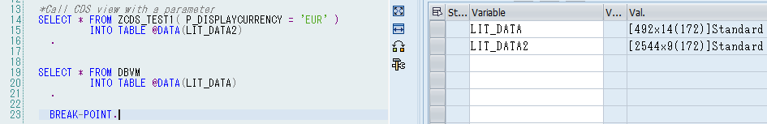
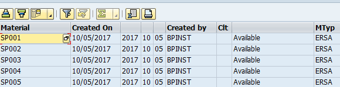
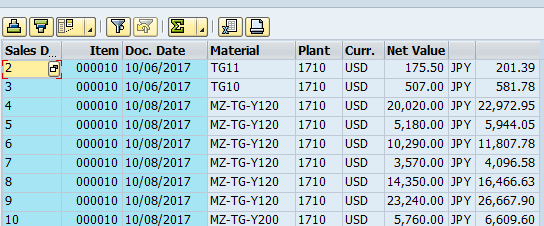

CDS view can be used in many differne occasions. This self study session demonstrates calling CDS views from ABAP programs. I created two CDS views, "YCSV_SASAKI" and "ZCDS_TEST1" with a parameter. They can be called using Open SQL such as below:
SELECT * FROM YCSV_SASAKI
INTO TABLE @DATA(LIT_DATA)
.
*Call CDS view with a parameter
SELECT * FROM ZCDS_TEST1( P_DISPLAYCURRENCY = 'EUR' )
INTO TABLE @DATA(LIT_DATA2)
.
The results are stored in the internal table.
If you need ALV display, it's done by using Class "CL_SALV_GUI_TABLE_IDA".
DATA: GO_ALV_IDA TYPE REF TO IF_SALV_GUI_TABLE_IDA.
*Display CDS without parameter in ALV
TRY.
CL_SALV_GUI_TABLE_IDA=>CREATE_FOR_CDS_VIEW( IV_CDS_VIEW_NAME = 'ZCDS_TEST2' )->FULLSCREEN( )->DISPLAY( ).
CATCH CX_ROOT.
ENDTRY.
*Display CDS with parameters in ALV
GO_ALV_IDA = CL_SALV_GUI_TABLE_IDA=>CREATE_FOR_CDS_VIEW( IV_CDS_VIEW_NAME = 'ZCDS_TEST1' ).
GO_ALV_IDA->SET_VIEW_PARAMETERS( VALUE #( ( NAME = 'P_DISPLAYCURRENCY' VALUE = |JPY| ) ) ).
GO_ALV_IDA->FULLSCREEN( )->DISPLAY( ).
The result will displays data in ALV twice.
 Thus, calling CDS views is simple and it comes in handy if you want to achieve code pushdown methodology with ABAP CDS built in functions.